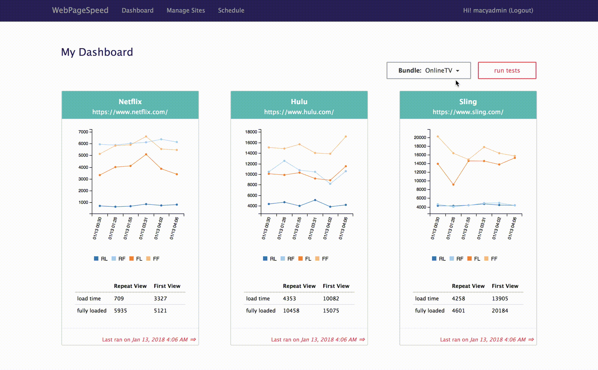

WebPageSpeed
Motivation
Many companies measure web performance using webpagetest, a tool being developed by Google. After each release, engineers will go to webpagetest.org, enter the URL, click start test, wait for the test to finish, then record the number on an excel sheet. If a company has multiple websites, this process has to repeat several times for each release. It requires a lot of manual effort and the data in the excel sheet could be more useful if we can visualize it.
WebPageSpeed is a test management system that will run the performance tests for all your websites and record the data for you with one click. It also provides a dashboard for you to visualize the load time history.
Screenshots
Dashboard displays 6 most recent load time for each site
Site details page displays all history, you can see the full test report by clicking the summary url or delete individual data by clicking the trash can button

Sites can be group by bundle
How does WebPageSpeed work
(1) Click run test to execute test for all sites in the selected bundle
(2) Add new site using Manage Sites menu

(3) View test details and all performance history
(4) Link to WebPageTest to see more details

Tech Stack
Node.js, Express, AngularJS, Bootstrap, MongoDB, Pug, JavaScript, CSS, C3.js